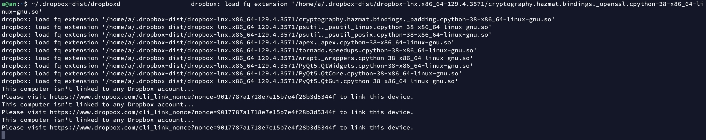
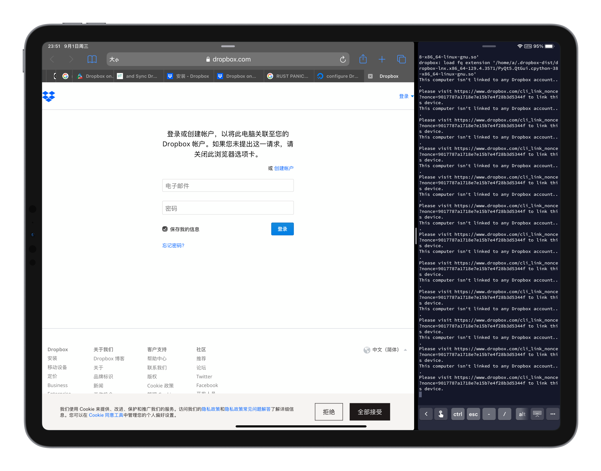
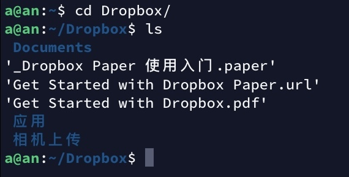
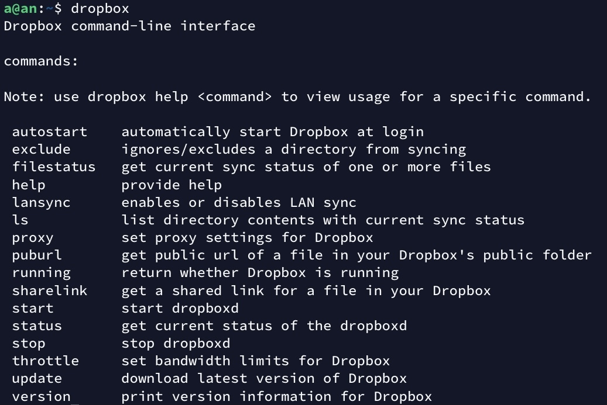
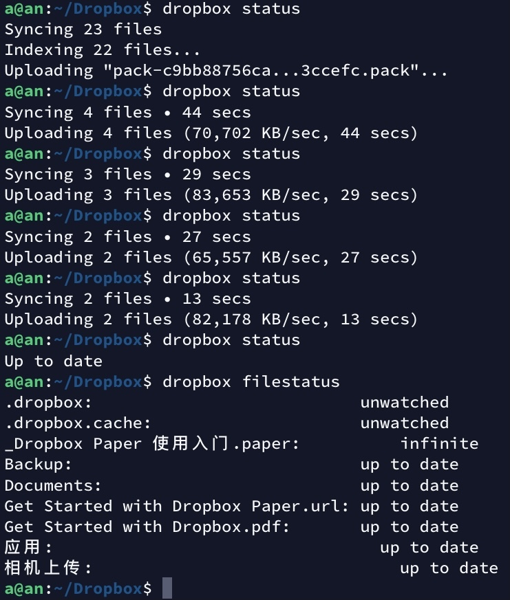
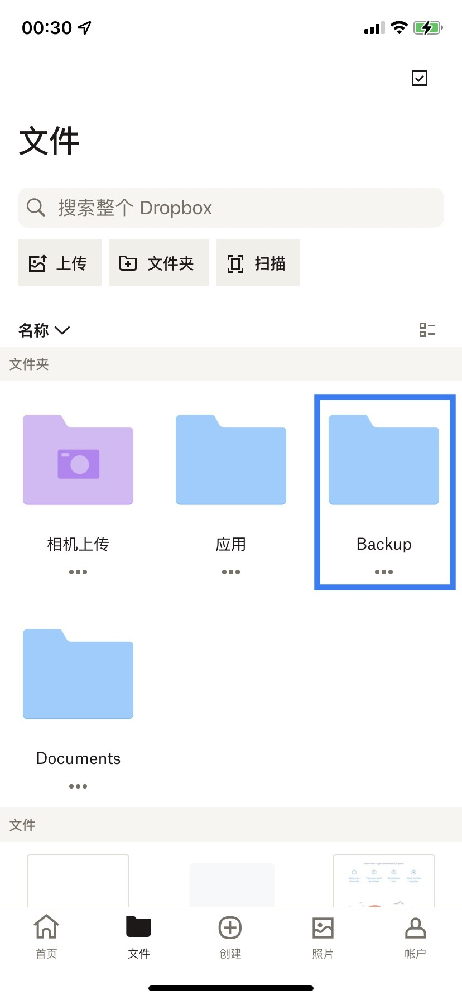

又进入了新的一月，又到了服务器续费的时候。由于我前些天把我的 travel blog 变成静态页面了，因此原本 serve 了它一段时间的服务器也可以注销掉了，不过服务器上还存有一些需要保留的文件，于是今天想把这些文件放到 Dropbox 中。
参照 官方安装页面，先运行以下命令下载并解压 Dropbox。
$ cd ~ && wget -O - "https://www.dropbox.com/download?plat=lnx.x86_64" | tar xzf -
然后在 home 目录就会产生一个 .dropbox-dist 目录，同样参照以上官方安装页面，运行这个目录下的 dropboxd 来启动 Dropbox 守护进程。
$ ~/.dropbox-dist/dropboxd
我在运行这句命令之后这段程序执行了一些指令后报错。（我使用的是 Ubuntu 20.04 LTS）

于是立马在 DigitalOcean 中找到答案，我缺少了一些依赖，运行以下命令解决此问题。
$ sudo apt install libc6 libglapi-mesa libxdamage1 libxfixes3 libxcb-glx0 libxcb-dri2-0 libxcb-dri3-0 libxcb-present0 libxcb-sync1 libxshmfence1 libxxf86vm1
安装依赖后，运行上述命令，得到以下输出：

根据提示需要打开 URL 登录自己的账号以绑定这台服务器。打开后界面如下。

如果自己的 Dropbox 账号是通过 Google 或者 Apple 登录的话，需要先登录自己的账号设置一个密码才能在这里登录。
登录之后，控制台会出现一句话，
This computer is now linked to Dropbox. Welcome XXX
代表登录已经成功了。
此时 home 目录下已经出现了 Dropbox 目录，进入之后就可以看见自己 Dropbox 内部存放的文件。

依照官方安装页面，可以通过下载一个 Python 脚本，可以更方便地用命令行控制 Dropbox。运行以下命令1来下载 Python 脚本到 /usr/local/bin 目录，即可快速执行。
$ sudo wget -O /usr/local/bin/dropbox "https://www.dropbox.com/download?dl=packages/dropbox.py"
再给它添加执行权限。
$ sudo chmod +x /usr/local/bin/dropbox
然后运行 dropbox 命令即可。

运行 dropbox start 启动守护进程。dropbox status 查看状态2。
当操作 Dropbox 目录时，守护进程会将更新的内容自动同步至 Dropbox 云端。

在其他设备上也能看到同步的文件。
